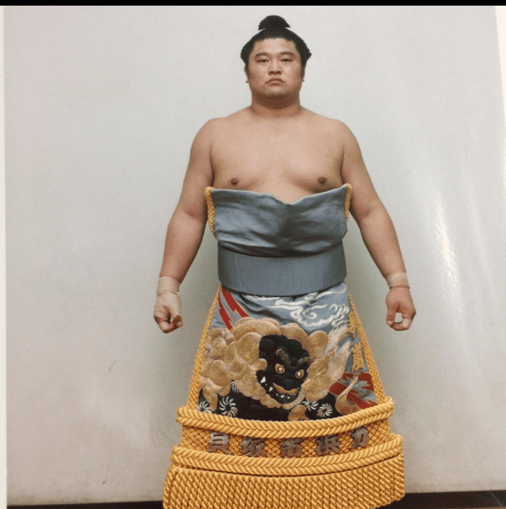
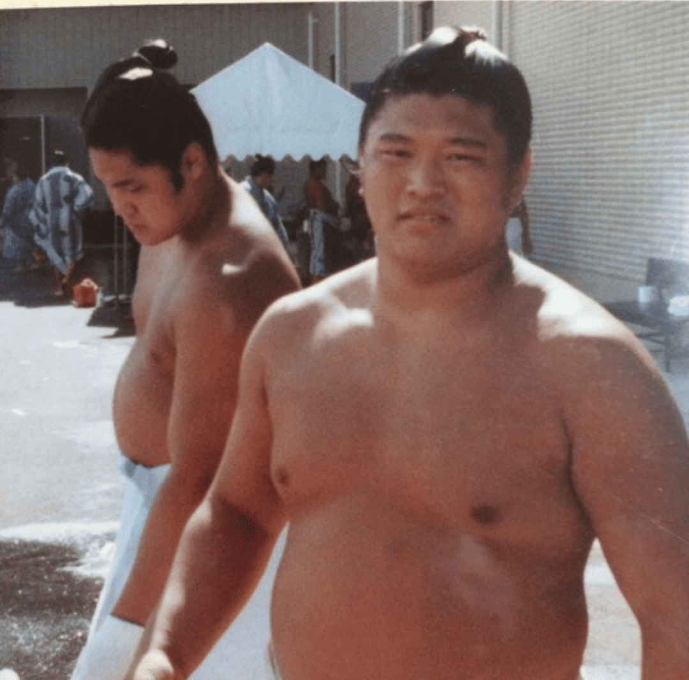
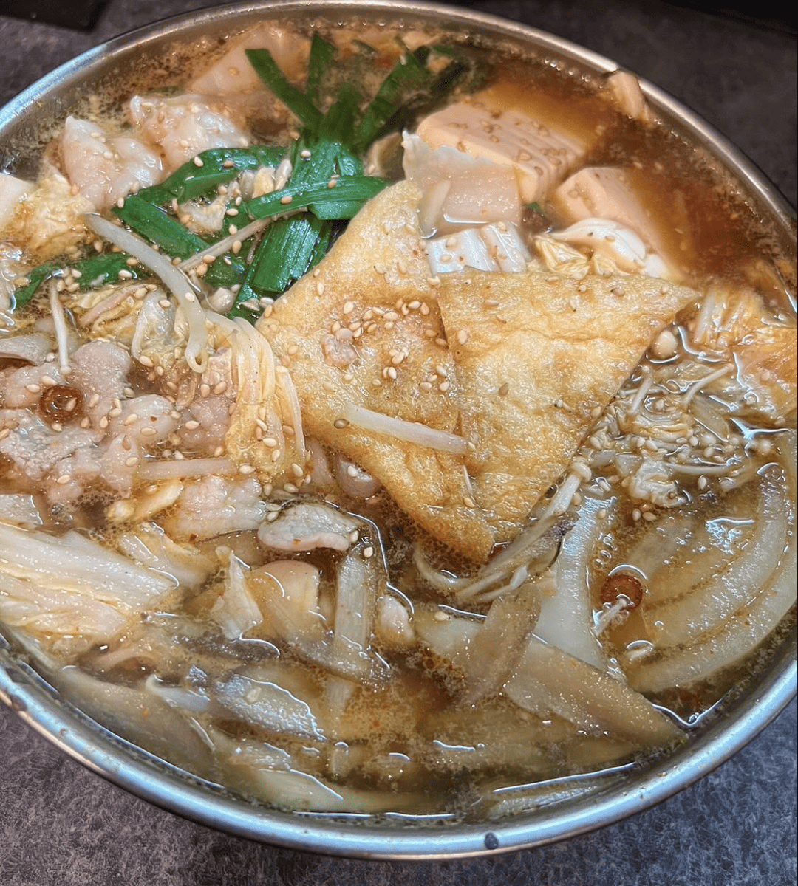
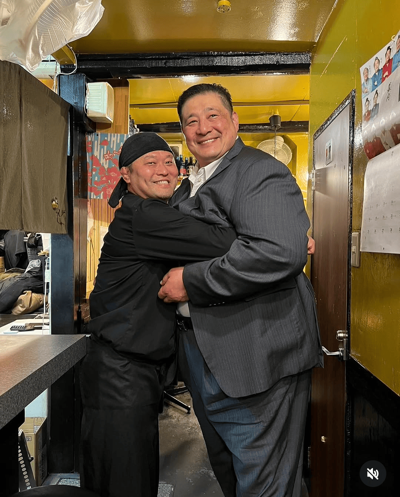
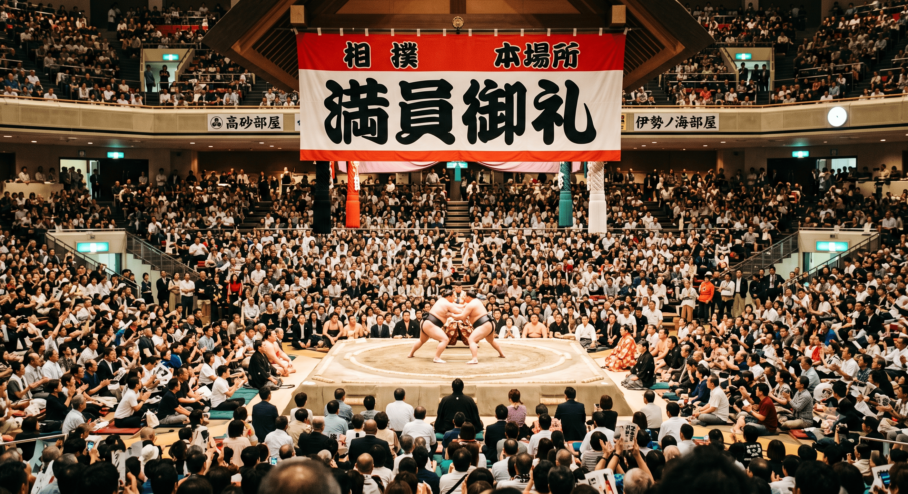

暖簾の先に、
佐渡ヶ嶽部屋直伝の味が待っている。
暖簾の先に、
佐渡ヶ嶽部屋直伝の味が待っている。

鶏ガラをふんだんに使い、じっくりと炊き出したコクのあるスープ。一口飲めば体に染み渡る、本物のちゃんこ・もつ鍋をどうぞ。

同期には錚々たるメンバー。お相撲さんしか知らない「本物の味」と「世界の話」を、美味しいお酒と共にお楽しみいただけます。
【激アツ演出】ボタンを押して大将の経歴を狙え！スクショして「大将スマイル」が出たらラッキー！

名門·佐渡ヶ嶽部屋の系譜を継ぐ元力士。お相撲さんしか知らない「本物の味」を天満にお届け！

関取まで上り詰めた実力派。現役時代の激闘のスピリットが、この天満の暖簾に受け継がれている！

鶏ガラをふんだんに使い、じっくりと炊き出したコクのある至高スープ。一口飲めば体に染み渡る本物の味。

【超大吉！】普段は寡黙な大将の極上スマイルが炸裂！これを見られた今日は最高の夜になるはず。

琴嵐の夜はいつも大賑わい！美味しいお酒と旨いちゃんこを囲んで、みんなで元気に「ごっつあんです！」
佐渡ヶ嶽部屋の系譜を継ぐ、現役関取たちの熱き闘い！
現在開催中の本場所リアルタイム星取・最新の取組結果は、
日本相撲協会公式サイトにてご確認いただけます。